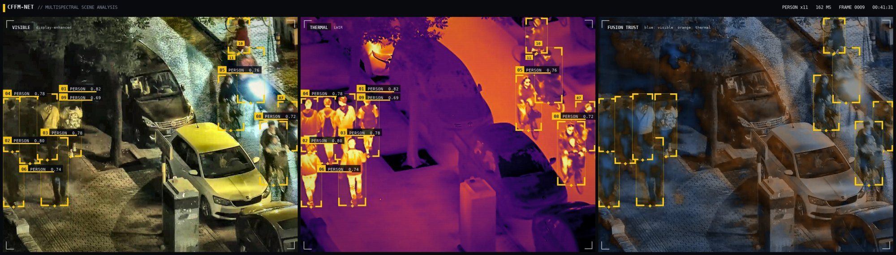
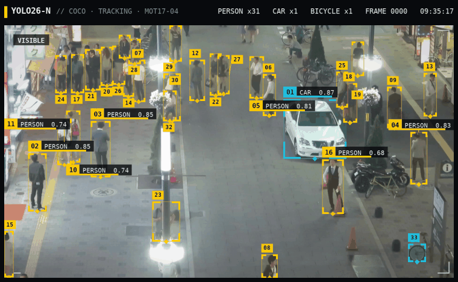
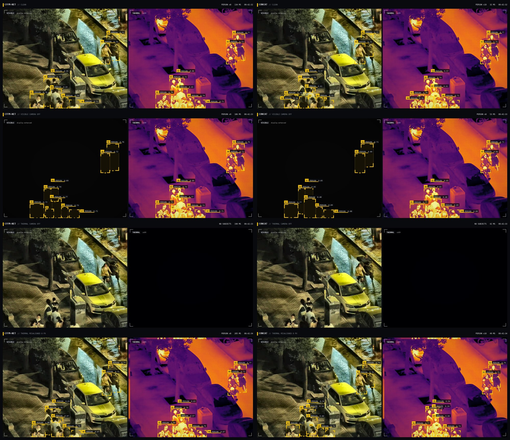
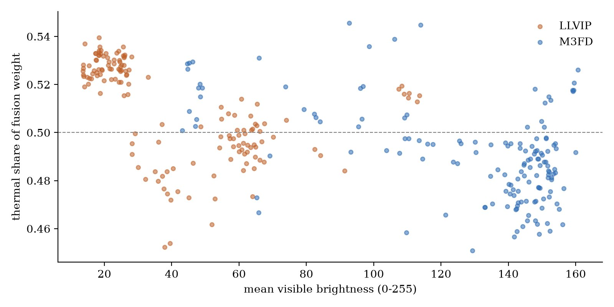
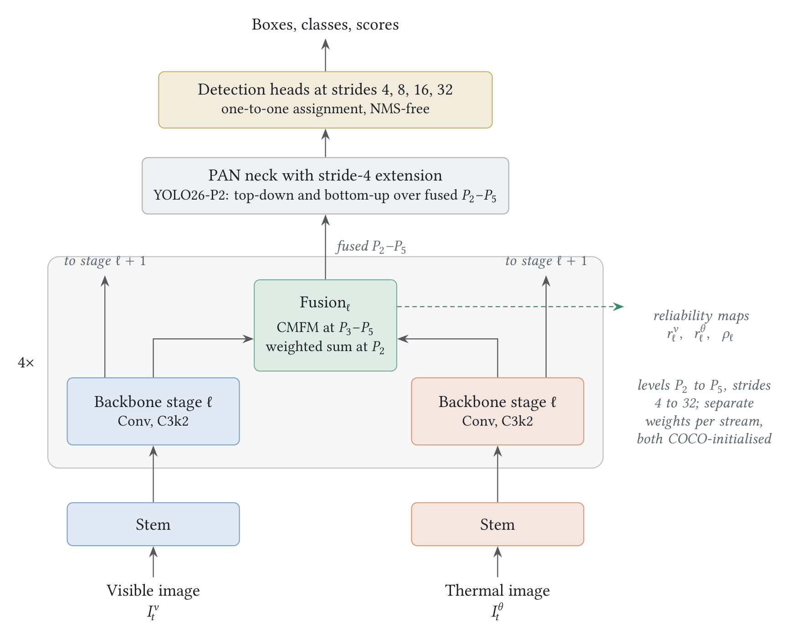
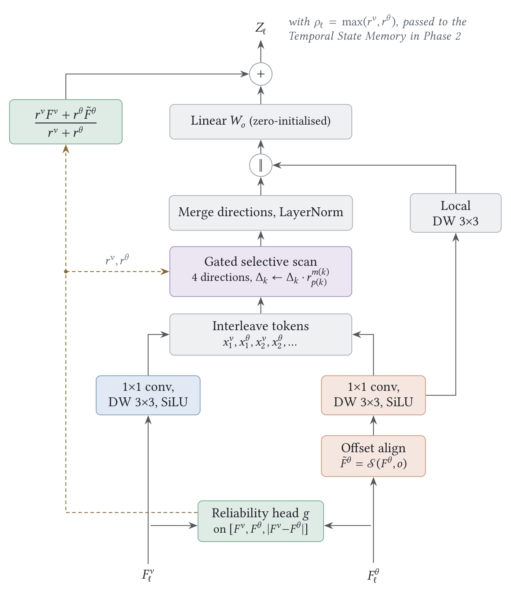
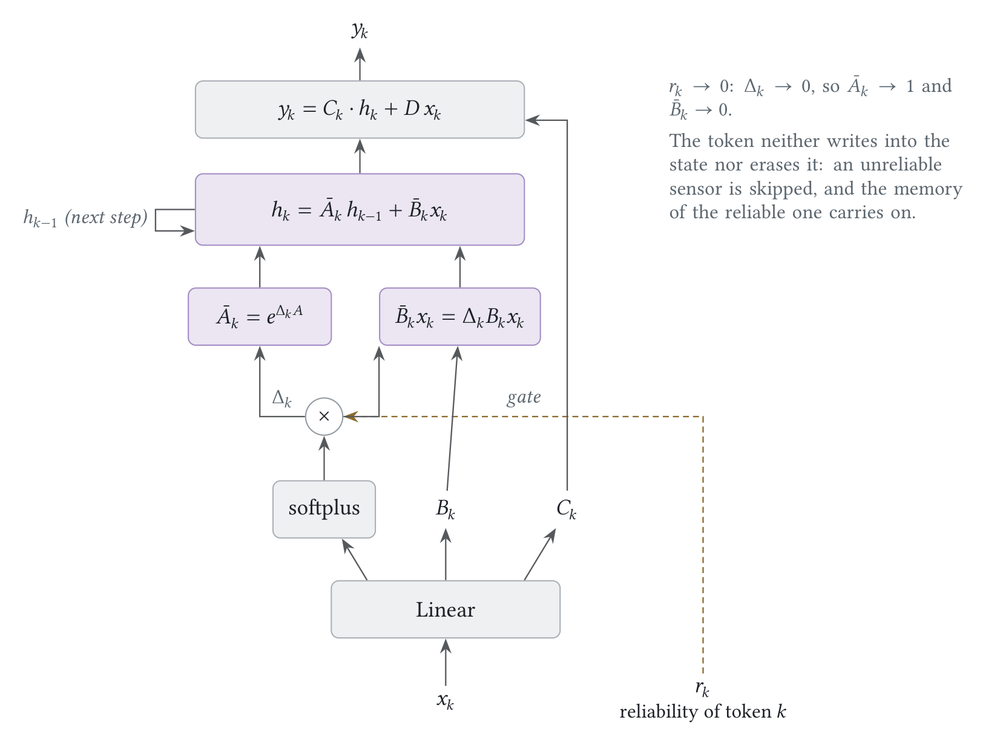

Two cameras, one picture. CFFM-Net fuses a visible and a thermal camera with a selective
state-space scan, and decides, at every location, which camera to trust. Every subject is bracketed,
numbered and logged.

11people, one night frame
0.629AP50-95 on LLVIP
~160 msper pair, laptop GPU
2cameras fused at 4 scales
01 Try it
Drop a visible and a thermal image of the same scene, or click a sample. Ordinary photos go to the general YOLO26-n (80 COCO classes), drawn the same way.
ready
backend
The page calls a Gradio app (demo/app.py). Run it locally or point this at a Hugging Face Space.
02 Tracking a crowd
MOT17-04, a pedestrian street at night filmed at 30 fps, with ByteTrack. Each subject keeps its number, a trail of where it walked and an arrow for where it is heading. Visible footage, so the general YOLO26-n runs here.

03 What we found

The same night scene with each camera failing. Both fusion models keep working on thermal alone.
With the thermal camera off, both find no one, although the people are plainly visible. This is the
main weakness to fix next.
Holds up when thermal drifts
With the thermal image shifted 4 or 8 px, CFFM-Net keeps
+1.7 and +2.9 AP over the concat baseline. Told that thermal is gone, it still scores 0.17, where concat
collapses to 0.003.
Trust follows the light, weakly
Across 300 test frames, darker scenes lean on thermal
(correlation −0.50 on both datasets). The fusion weights stay between 0.46 and 0.52, so the gate learned
the right direction but responds weakly.
Behind on clean images
On clean data CFFM-Net trails simple concatenation by
2.1 AP (LLVIP) and 2.6 AP (M3FD). A head-control experiment and a longer schedule are running now.

04 Pilot results
COCO AP50-95 on the full test sets, one seed, YOLO26-n backbones, 30 epochs. Higher is better.
model
LLVIP
M3FD
params
latency (T4)
visible camera only
0.520
–
2.5 M
17 ms
thermal camera only
0.641
–
2.5 M
17 ms
two-stream concat
0.650
0.505
4.1 M
23 ms
CFFM-Net
0.629
0.479
6.0 M
42 ms
CFFM-Net, no reliability gate
0.626
–
6.0 M
41 ms
CFFM-Net, gated conv instead of scan
0.628
–
6.2 M
35 ms
05 How it works

Two YOLO26 backbones, fused at four scales, one NMS-free head.

The fusion block: reliability head, alignment, interleaved tokens, gated scan.

Reliability scales each token's step: an unreliable sensor cannot overwrite the state.